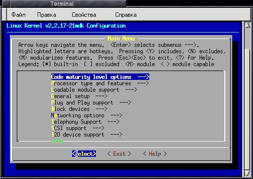

Конфигурирование ядра linux и повышение его
производительности
Я использую версию ядра 2.2.17
поставляемую с дистрибутивом Mandrake, но основные принципы останутся теми
же
Конфигурирование
ядра
Processor
type and features
Loadable
module support
General
setup
PnP
support
Block
devices
Networking
options
SCSI
support
Network
device support
IrDA, USB
support
Filesystems
Sound
Компилирование
ядра
Итак, приступим.
Убедитесь, что у вас установлены исходники
ядра и пакет заголовков:
kernel-2.2.17-21mdk.i586.rpm
kernel-headers-2.2.17-21mdk.i586.rpm
Перейдите в каталог, который содержит
исходники ядра. Обычно это
/usr/src/linux или /usr/src/linux-2.2.17
(По сути linux - это ссылка на каталог linux-2.2.17)
Все действия
нужно выполнять под root'ом.
cd /usr/src/linux
Затем нужно ввести одну из команд:
#
make config
# make menuconfig
# make xconfig
В первом случае вам будет задан ряд
вопросов (кстати, очень длинный), на который вам предстоит ответить.
Я
рекомендую make menuconfig - это намного удобнее. В этом случае вы можете
редактировать конфигурацию ядра с помощью меню. xconfig аналогичен
menuconfig, только предназначен для запуска из-под Х.

Menuconfig
Перед внесением изменений в файл
конфигурации ядра, сохраните его под
другим именем - Save
Configuration to an Alternative File
Во время конфигурирования ядра вы можете
включать или исключать некоторые функции из состава ядра или же сделать
нужную вам функцию модулем, т.е. в состав ядра данная функция включена не
будет, но она будет использоваться при необходимости, например, если вы
добавите в систему устройство, то будет подключен нужный модуль (при
условии, что вы его откомпилировали)
Наша задача - повышение производительности
системы, этого можно достичь, если точно сконфигурировать ядро и исключить
из его состава ненужный код.
Processor type and features
Здесь можно указать тип процессора и
функции, например поддержка памяти более 1GB, MTRR, эмулирование
математического сопроцессора.
Очень важно указать тип процессора: после
того, как я правильно указал тип своего процессора производительность
повысилась примерно в 1.5 раза, особенно это стало ощутимо при загрузке
системы.
Данная функция используется для
оптимизации работы процессора. Если вы укажите тип процессора, например
486, 586, Pentium, PPro ядро не обязательно будет запускаться на более
ранней архитектуре. Например, если вы укажите Pentium, ядро будет работать
на PPro (хотя медленнее), но нет никакой гарантии, что оно запуститься на
486.
Следующие типы рекомендованы для получения
наибольшей производительности:
| 386 |
Процессоры производства AMD/Cyrix/Intel 386DX/DXL/SL/SLC/SX
Cyrix 486DLC/DLC2, UMC 486SX-S |
| 486/Cx486 |
AMD/Cyrix/Intel/IBM DX4, 486DX/DX2/SL/SX/SX2 AMD/Cyrix 5x86
NexGen Nx586, UMC U5D или U5S |
| 586/K5/5x86/6x86 |
обычные (самые первые) процессоры Pentium, AMD K5 |
| Pentium/K6/TSC |
Intel Pentium/Pentium MMX, AMD K6,K6-3D |
| PPro/6x86MX |
Intel Pentium II/Pro, Cyrix/IBM 6x86MX, MII | В
моем случае ядро было оптимизировано под 586/K5, после того
как я
установил PPro Linux заработал быстрее. Я использую Intel Celeron 433A
Объем памяти - установите 1GB, если,
конечно, у вас менее 1GB.
Math emulation
Включите эту опцию, если вы используете
один из процессоров: 386SX/DX/SL/SLC без 80387, 486SL/SX/SX2
SMP (Symmetric multi-processing
support)
Скорее всего у вас установлен один
процессор и эту опцию вам нужно будет отключить - зачем включать лишний
код в ядро?
Loadable module support
Если вы планируете использовать
загружаемые модули, включите все функции. Можно создать компактную версию
ядра, которая вообще не использует модули, а поддержка всех необходимых
устройств будет включена непосредственно в ядро. В этом случае можно
отключить все функции в этой секции.
General
setup
BIGMEM
Поддержка памяти более 1GB
Networking support
Включите эту опцию, даже если вы не
планируете работу в сети. Функции печати в Linux требуют сетевой
поддержки.
PCI support
Поддержка шины PCI.
PCI quirks
Эту опцию нужно использовать, если у вас
неисправна BIOS. Некоторые BIOS содержат ошибки, которые могут привести к
сбоям при работе с PCI. Эта опция должна исправить эту ошибку. Если вы
неуверенны, включите ее. Позже можно будет поэкспериментировать - если же
BIOS исправна, эту функцию можно спокойно отключить и тем самым внести
вклад в повышение производительности системы.
PCI bridge optimization
(experimental)
Оптимизация моста PCI - для любителей
экспериментов. Система может работать нестабильно. Попробовать можно, но я
бы не стал жертвовать надежностью ради производительности.
Backward-compatible /proc/pci
Старые версии ядра поддерживали файл
/proc/pci, который содержит перечень всех PCI-устройств. Некоторые
программы используют этой файл, например, для сбора информации о системе.
В новых ядрах используется файл /proc/bus/pci. Для поддержки обратной
совместимости рекомендуется включить эту опцию. Если вы ее отключите, то у
вас будет только один (новый) интерфейс /proc/bus/pci
MCA support
MCA - шина передачи данных, разработанная
IBM - использовалась в системах PS1/PS2. Снята с производства и не
используется.
System V IPC
Просто включите эту опцию. Более подробно
вы можете прочитать на сайте metalab
BSD Process accounting
При включении этой опции программы
пользовательского уровня будут информировать ядро о времени своего
создания, владельце, использовании памяти и терминалов. Данную опцию
рекомендуется включить.
Sysctl support
Sysctl позволяет изменять параметры ядра
без перекомпилирования во время загрузки. Поддержка sysctl увеличивает
размер ядра на 8Кб. Если ядро, которое вы компилируете, не предназначено
для дисков загрузки/восстановления, включите эту опцию.
Kernel support for a.out/ELF/MISC/JAVA
binaries
Linux-программы используют ELF-формат.
Поэтому его нужно включить в состав ядра, а остальные использовать в
качестве модулей.
Parallel port support
Поддержка параллельного порта.
PC-style hardware
Вы должны включить эту опцию (или хотя бы
модулизировать ее), если вы используете параллельный порт типа PC. Все IBM
PC-совместимые компьютеры и некоторые Alpha используют этот тип порта.
Support foreign hardware
Включите эту опцию, если вы используете
другой (не PC) тип параллельного порта.
Advanced Power Management (APM) BIOS
support
Поддержка расширенного управления
питанием: ATX, "green"-устройства (например, VESA-мониторы). Если вам
нужно отключить эту функцию во время загрузки, введите в качестве
параметра ядра apm=off
При возникновении проблем проверьте
следующее:
- наличие достаточного количества свопа, а также убедитесь, что раздел
подкачки включен
- передайте ядру инструкцию no-hlt
- попробуйте отключить поддержку сопроцессора (инструкция no387)
- передайте ядру инструкцию floppy-nodma
- убедитесь, что процессор не "разогнан"
- установите новый вентилятор для процессора
PnP support
Поддержка Plug and Play
Block
devices
Normal PC floppy disk support
Если вы хотите использовать FDD в Linux,
включите эту опцию
Enhanced IDE/MFM/RLL
disk/cdrom/tape/floppy support
Выключите эту опцию, если ваша система
оснащена только SCSI-устройствами
Use old disk-only driver on primary
interface
Эта опция устанавливает старый драйвер для
управления Primary master IDE-интрефейсом. Обычно ее нужно отключить -
будет использован новый драйвер для всех четырех дисков (Primary master,
Primary slave, Secondary Master, Secondary slave) Ее также нужно
отключить, если у вас только SCSI-устройства
Include IDE/ATA-2 Disk support
Поддержка IDE/ATA-2 дисков. Опцию можно
отключить, только если вы не используете ATA-дисков.
Use multi-mode by default
При возникновении ошибки
hda: set_multmode: status=0x51 hda:
set_multmode: error=0x04
включите эту опцию
Include IDE/ATAPI CDROM support
Поддержка CDROM'а. При отсутствии такового
отключите ее для уменьшения размера ядра.
Include IDE/ATAPI TAPE support
Поддержка IDE/ATAPI-стримера
Include IDE/ATAPI FLOPPY support
Поддержка IDE/ATAPI-флоппи. Если вы
используете LS-120 или Lomega-ZIP, включите эту опцию.
SCSI emulation support
Позволяет использовать SCSI-драйвер для
ATAPI-устройств,
для которых нет родного драйвера.
Все остальные опции в данной секции
предназначены для
поддержки конкретных чипсетов. Рекомендую оставить
поддержку
только тех устройств, которые имеются в вашей системе.
Достичь увеличения производительности
жесткого диска
можно также и с помощью команд:
# hdparm -c 1
/dev/hda
setting 32-bit I/O support flag to 1
I/O support
=1 (32 bit)
# hdparm -d 1 /dev/hda
setting
using_dma to 1 (on)
using_dma = 1 (on)
Первая из них
включает 32-битный доступ к диску (если он еще не включен), а вторая -
DMA.
Иногда вместо опции -c 1 нужно использовать -с 3. Подробнее
можете узнать в hdparm(8) (команда man 8 hdparm)
После этих команд
нужно запустить hdparm в режиме теста скорости
# hdparm -t /dev/hda
Если параметры вас устраивают, введите команду
# hdparm -k 1
/dev/hda
для сохранения изменений.
hdparm в режиме теста для моего жесткого
диска до
Timing buffered disk reads: 64B in 10.92 seconds =
5.86MB/sec
после
Timing buffered disk reads: 64B in 7.52
seconds = 8.53MB/sec
Networking options
Packet Socket
Протокол Packet используется программами,
которые обмениваются данными непосредственно с сетевыми устройствами без
промежуточных сетевых протоколов, например tcpdump.
Kernel/User netlink support
Просто включите эту опцию
Я рекомендую включить следующие опции
| Routing messages |
Сообщения маршрутизатора |
| Netlink device emulation |
Опция обратной совместимости. Скоро будет удалена, но сейчас она
нужна. |
| Network firewalls |
Поддержка firewall |
| Socket Filtering |
Фильтр сокетов. |
| UNIX domain sockets |
Поддержка UNIX-сокетов. Не отключайте эту опцию |
| TCP/IP networking |
Поддержка TCP/IP обязательно должна быть включена |
| IP:firewalling (*) |
IpChains |
| IP:firewall packet (*) |
IpChains |
| IP: transperent proxy support (*) |
Прозрачный прокси |
| IP: masquerading (*) |
IP маскарадинг |
| IP: ICMP masquerading (*) |
ICMP маскарадинг |
| IP: masquerading virtual server support (*) |
IP маскарадинг для виртуальных серверов |
| IP: broadcast GRE over IP (*) |
Поддержка broadcasting в WAN |
| IP: aliasing support |
Поддержка псевдонимов |
| IP: TCP syncookie support |
Рекомендуется включить из соображений безопасности.
Противодействует SYN-атакам |
| IP: allow large windows |
Позволяет повысить производительность при работе в сети. Не
рекомендуется при объеме памяти менее 16Мб |
Опции (*) требуются в случае
конфигурирования сервера. При создании сервера также потребуется включение
ряда дополнительных опций в зависимости от его назначения. Из соображений
безопасности включение поддержки firewall на рабочей станции не будет
лишним.
SCSI
support
В данной секции можно установить параметры
SCSI. При отсутствии в системе SCSI-устройств можно отключить все.
Network device support
Здесь можно указать поддерживаемые
протоколы (например, PPP), а также типы поддерживаемых сетевых адаптеров.
Отключите все, что не используете. Например, если у вас установлена
PCI-сетевая плата, то особого смысла включения поддержки других
ISA-сетевых плат я не вижу.
IrDA, USB support
Поддержка соответственно IrDA- и
USB-устройств.
Filesystems
Принцип такой: все, что нужно - встраиваем
в ядро, остальное - или исключаем или используем в качестве модуля.
Я рекомендую включить в ядро следующие
системы:
Second ext fs (ext2), ISO 9660, MS Joliet CDROM extension,
VFAT, /proc, /dev/pts
В виде модулей: MS DOS FAT, MINIX
Также неплохо было бы включить поддержку
квотирования (в случае с сервером).
Sound
Включите поддержку звука, если у вас есть
звуковая плата, а во всем
остальном следует поступить так, как и в
случае с сетевыми платами - включить в ядро только используемую звуковую
плату, а все остальные отключить (даже не использовать в качестве модуля).
Точнее включить код драйвера для вашей звуковой платы непосредственно в
ядро вам, скорее всего, не удастся, но вы его можете использовать в
качестве модуля, а все остальные модули даже не компилировать.
Теперь, когда все устройства
сконфигурированы, нужно сохранить файл конфигурации ядра и перейти
непосредственно к этапу
компилирования ядра.
Введите команду
# make dep
После завершения ее работы нужно ввести
команду
# make bzImage
Если исходники ядра и компилятор
установлены корректно примерно минут через 20 (это зависит от версии ядра
и от быстродействия вашей системы), вы получите откомпилированное ядро.
Обычно оно помещается в каталог
/usr/src/linux/arch/i386/boot
Теперь нужно откомпилировать модули,
которые будут использоваться ядром
# make modules
И установить их
# make modules_install
Перед установкой модулей сделайте
резервную копию модулей
старого ядра (каталог /lib/modules)
Теперь можно ввести команду
# make
install
для установки только что созданного ядра, однако я не
рекомендую этого делать - сначала нужно протестировать наше ядро.
Откройте в любом редакторе файл
/etc/lilo.conf
# vi /etc/lilo.conf
Добавьте следующие строки
image=/usr/src/linux/arch/i386/boot/bzImage
label=my_linux
root=/dev/hda5
append=" mem=128M"
read-only
Естественно, укажите свою корневую
файловую систему и объем оперативной памяти.
Введите команду
# lilo
Теперь перезагрузите систему
# reboot
Попробуйте загрузить ядро. В случае
возникновения ошибок вы всегда сможете загрузить старую версию.
|